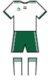
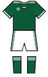

The basic kit

Backup kit

Description and history
The Egyptian Club was a lesbian bar located at the intersection of Southeast 37th Avenue and Division Street in Portland's Richmond neighborhood.
It had a "labyrinthine three-bars-within-a-bar" layout and featured a medium-sized dance floor, pool tables, and video poker.
Lonely Planet called the Egyptian Club "Portland's main lesbian hangout, where guys are (barely) tolerated and girls are (most) butch dykes.
Closure and re-opening as Weird Bar
The Egyptian Club operated for fifteen years as Portland's only bar targeted specifically to lesbians, until it began having financial troubles in 2010.In August, Davis posted an announcement online that read:
The economy has taken its toll on our community and on our bar. It Is with a heavy heart that we must announce the limited future of the Egyptian Club. Without a miracle, we will be having our closing party on Oct. 9, 2010 ... Reason? We have always struggled to keep our doors open. Keeping an establishment of this type and size open requires an incredible amount of business just to pay the bills. It does not appear as if our community is able to support our efforts at this time, and we are not able to float until this is able to happen ... The miracle we are looking for is either to win the lottery, or an immediate upturn in the economy that would allow for record sales in the near future along with enough residual business to sustain us for however long our community would have us here. With the way we see businesses closing all around us, we think it would be a miracle for that to happen ... We are not looking for fundraisers, or handouts. Those would only help temporarily. We want to sell our product to people who want it. We are a business. We live by different rules than the non-profit organizations we do fundraisers for ... I can’t believe the overwhelming response to this announcement. It is so nice to know that so many of you care about the future of our business ... Unfortunately, because of the huge drop in sales, we have had to lay off some of our staff members. This was incredibly hard and involved tears on both sides. We are like family. I feel like I have failed them. We hope for a miracle so that these layoffs can be temporary ... During these two months prior to our closing, we are committed to bring you the best in entertainment and parties. We want to go out with a bang ... We thank all our loyal patrons that have been with us throughout the years. We love you. You have truly made this bar something special. We all know it is not the bricks and mortar that make a place a home … it’s the people. We are family. You are who we will miss the most.